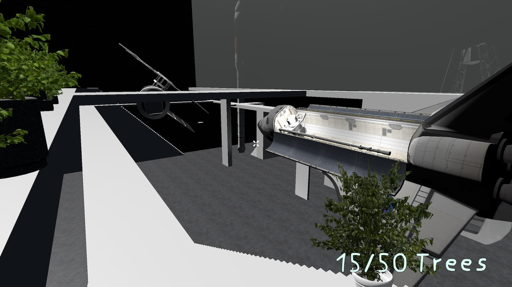

Features
Unser Spiel weist noch mehr tolle Features auf...
Wenn du mitarbeiten möchtest, dann sieh dir unser GitHub an. Dort findest du unseren TacticalLauncher, unsere TacticalFont und die TacticalWebsite.
Aus Lizenzgründen können wir den Code unseres Spiels dort nich veröffentlichen, trotzdem kannst du gerne ein Issue eröffnen.
Beschreibung Tactical Math Returns
Windows (Launcher):
Für Windows, haben wir einen Launcher mit WPF geschrieben, der das Spiel aktuell hält, denn bei einem Multiplayer-Spiel ist es wichtig, dass alle Spiele auf der aktuellen Version sind. Der Launcher lädt eine Text-Dateien von Google Drive, mit der er erkennt, ob es eine neue Version gibt, die er dann herunterlädt.
Damit der Launcher selbst auch installiert und aktualisiert werden kann, verwenden wir Squirrel.Windows (https://github.com/Squirrel/Squirrel.Windows). Leider wird Squirrel.Windows aktuell nicht weiterentwickelt.
Es wurde auch überlegt, Chocolatey zu verwenden, das war aber zu kompliziert (NuGet Server Hosten für eigenes Repo), also gibt es jetzt einen Launcher.
(Wir arbeiten aktuell daran, noch weitere Spiele, wie den Space Flight Simulator von Jannes, im Launcher zur Verfügung zu stellen und den Launcher um einige Funktionen zu erweitern.)
Linux (Flatpak):
Um auch eine Linux Version des Spiels bereitzustellen, haben wir uns für Flatpak entschieden. Flatpak ist einfach zu nutzen, mit Integration in verschiedenen Software Centern und funktioniert auf jeder Distribution ohne große Probleme. Bei einigen Distributionen wie z.B. Fedora, CentOS, Elementary OS, Linux Mint und Pop! OS ist es bereits vorinstalliert. Ein weiterer Vorteil von Flatpak ist, dass Flatpak-Anwendungen in einer Sandbox-Umgebung isoliert vom Rest des Systems laufen und nur die Berechtigungen haben, die sie auch brauchen. Somit sind sie sicherer und es gibt keine Probleme mit Konflikten zwischen Anwendungen.
Android (Play Store):
Für Android ist der Google Play Store die Plattform der Wahl. Wir verteilen so intern über den Play Store die aktuellste Version. Wenn sie fertig ist, soll sie auch für alle verfügbar sein.
Das Spiel selbst:
Laufen kann man mit WASD. Mit der linken Maustaste kann Bäume/Setzlinge pflanzen.
Mit der ESC Taste pausiert man das Spiel. Hier findet man eine Übersicht, bei der man ins Menü oder die Karte wechseln kann. Dabei wird eine Abstimmung gestartet, ob die Mehrheit der Spieler die Kart wechseln will.
Es befinden sich 50 Setzlinge in der Hand. Diese kann man verpflanzen, oder auf den Gegner werfen, danach muss man mit R neue Bäume aus dem Rucksack holen. Trifft man den Gegner, dann ist er für 1 Sekunde Handlungsunfähig. Im Pausemenü kann man sehen, wie viele Bäume man bereits gepflanzt hat.
- verschiedene Karten (Bismarck-Gymnasium, Among Us The Skeld, Test, Level 1, Zumthor, RandomMap)
Multiplayer:
Für den Multiplayer verwenden wir Mirror (https://mirror-networking.com/), eine High Level Networking Library für Unity. Mirror ist eine Weiterentwicklung basiert auf Unity's eingestelltem UNET Networking System. Durch Mirror, ist das schreiben von Multiplayer Code schnell und einfach, da Server und Client ein Unity Projekt sind, allerdings hat man dadurch auch weniger Flexibilität beim Server.
Cheats:
Pflanzen, "neue Bäume holen" etc. wird Serverseitig ausgeführt, dadurch kann man dabei nicht einfach cheaten. Allerdings wird bei der Bewegung dem Spieler vertraut, wodurch man trotzdem sehr leicht cheaten kann.
Wir haben auch schon im Spiel eingebaute Cheats.
Server hosten:
Im lokalen Netzwerk kann man sich ohne Probleme mit einem lokalen Host mit Hilfe dessen lokalen IP-Adresse verbinden.
Wenn man einen Server hosten will und über das Internet darauf zugreifen will, muss eine Portfreigabe für Port 7777 eingerichtet werden (Protokoll: KCP [kann leider auf einer Fritz!Box nicht einfach freigegeben werden]). Dann kann man seine IP-Adresse, wenn man sie nicht weiß, über ipinfo.io nachschauen. Mit dieser kann man sich nun über das Internet mit dem Server verbinden, indem man Sie ins Feld "Server Adress" im Hauptmenü des Spiels einträgt.
Tactical Font:
Was braucht jedes gute Spiel? Eindeutig eine eigene Schriftart!
https://github.com/DaRealRoyal/TacticalFont
Neue Features Halbjahr
- verbesserte Maps
- Random Map Generator
- verbesserte Steuerung
- neues UI
- Bessere Skalierung des UI für unterschiedliche Displays
- Performanceverbesserungen
- neue Maps: "NASA", "Zumthor", "Level 1"
- 3D Audio
- Schleichen, Sprinten
- verbesserter Multiplayer
- - Spieler haben unterschiedlicher Farben
- - Namen über Spielern
- - Spielerliste im Pausemenü
- - Server
- - Abstimmung zum Wechseln der Map
- - Bäume verschwinden nicht mehr, wenn man sich trennt und erneut verbindet
- - Backend Verbesserungen
- Launcher
- Flatpak
- neue Webseite
- Touch UI
und mehr (wird vielleicht noch ergänzt)
Nachträgliche Gedanken
Wir hätten Unity 2019 LTS verwenden sollen, statt 2020.1, denn wir verwenden keinen neuen Features von 2020 und 2019 LTS wird länger unterstüzt und ist stabiler. Unity 2020 LTS ist noch nicht mit Mirror kompatibel.
Außerdem hätten wir die Universal Render Pipeline von Unity verwenden können, da sie besser und moderner ist.
Mit standardisierten Commitnachrichten hätte man Changelogs und das Journal, ohne zusätzlichen Aufwand, automatisch generieren können.